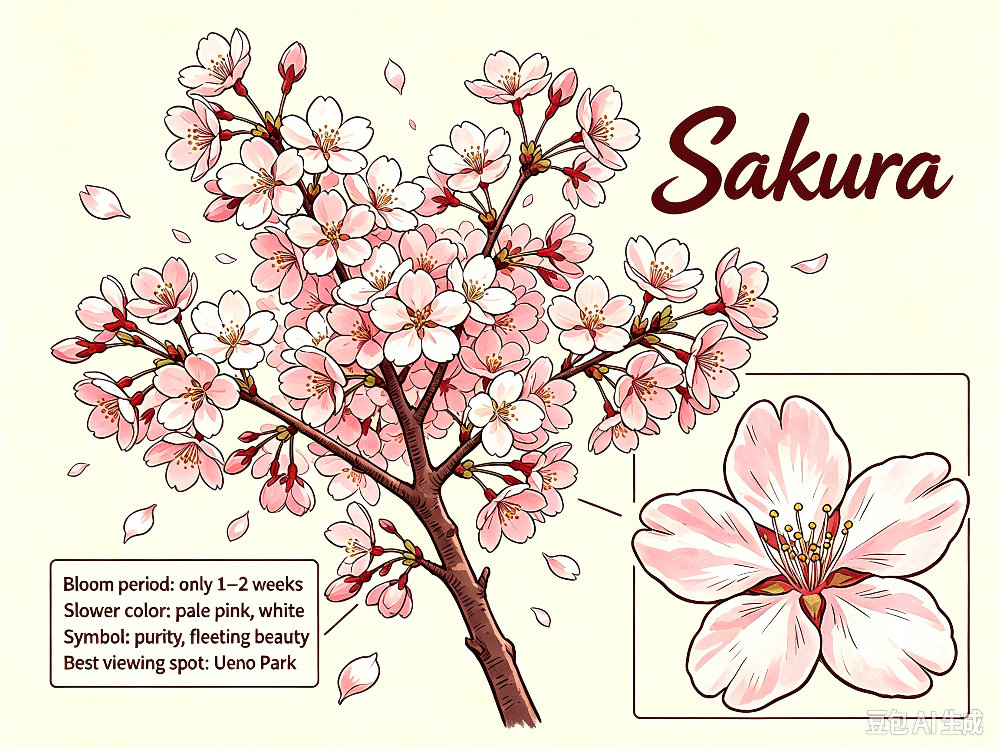
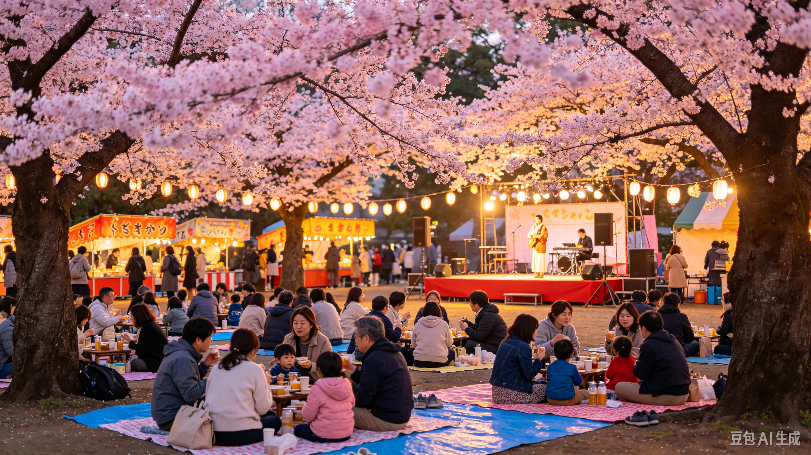

Cherry blossom, widely known as Sakura, is Japan's most iconic spring flower and a profound cultural symbol of purity, transience, and renewal. These deciduous trees produce delicate pale pink and white five-petaled flowers that cluster densely along bare branches before new leaves grow. Unlike most flowers that last for months, cherry blossoms bloom for only one to two weeks every year. Gentle wind easily blows petals down, creating the famous “sakura snow”. This short blooming period inspires the Japanese philosophy of appreciating fleeting beauty and living in the moment. Over 1,000 cherry trees line the walkways of Ueno Park, creating soft cloud-like pink scenery that defines Japan's famous spring atmosphere and attracts visitors from all over the globe.

The traditional Japanese custom of Hanami takes place every spring. Locals and tourists spread picnic blankets under blooming cherry trees to enjoy food, drinks, and gatherings with friends and family. Ueno Park hosts the famous Ueno Sakura Matsuri every year from mid-March to early April, featuring food stalls, antique markets, live performances, and magical night cherry-blossom light-up displays after sunset.

Best Time: Late March to Early April (full bloom season)
Location: Ueno Park, Taito City, Tokyo 110-0007, Japan
How to Get There: Depart from central Tokyo, take JR Yamanote Line to Ueno Station, 3-minute walk to Ueno Park main entrance.
GPS Coordinates: 35.7164° N, 139.7742° E
Tokyo, Japan